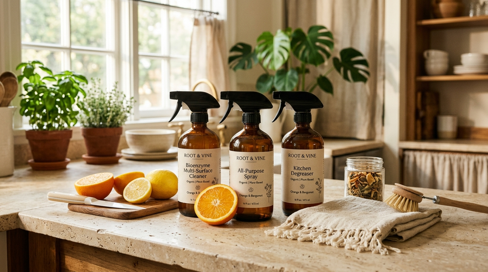

Pure Bioenzyme Cleaners Brewed from Repurposed Citrus Peels
We rescue discarded orange and lemon peels from juice vendors across Andhra Pradesh & Telangana, cold-fermenting them with raw jaggery into powerful, non-toxic cleaning essentials for your home.

What Makes Prakriti Bio Different
No greenwashing. We utilize true microbiological cold fermentation to replace synthetic petrochemical surfactants with natural enzymatic breakdown.
90-Day Cold Fermentation
No boiled syrups or fast chemical accelerants. Enzymes develop naturally under ambient southern warmth, producing rich multi-enzyme blends.
Local Fruit Stall Waste Rescue
We collect fresh sweet lime (Mosambi) and orange rinds from local juice vendors in Hyderabad and Vijayawada every morning.
100% Greywater & River Safe
Runoff nourishes soil microbes and breaks down organic sludge in drains instead of causing algal blooms in freshwater bodies.
Our Handcrafted Ferments
Bottled in recyclable packaging with package size options from 500ml trial bottles to 5-Liter refill cans and custom bulk volumes.
From Fruit Waste to Powerful Cleaner
No synthetic accelerants or heat treatments. We respect the natural 90-day anaerobic biological timetable to yield stable, high-potency enzymes.
Daily Peel Sourcing
Fresh orange and sweet lime (Mosambi) peels are collected daily within 6 hours of juicing from partner stalls in Hyderabad & Vijayawada.
3:1:10 Golden Ratio
3 parts washed peels, 1 part unrefined mineral-rich jaggery, and 10 parts clean water are blended in food-grade anaerobic fermenters.
90-Day Fermentation
Beneficial wild cultures ferment under controlled conditions, breaking down sugars and synthesizing active hydrolytic enzymes.
Micro-Filter & Test
Liquid is double filtered to remove pulp (which becomes rich garden compost). Every batch is pH-tested to ensure optimum acidity (3.5–4.0).
Documented Environmental Outcomes
We avoid fabricated sustainability counters. Every liter of Prakriti Bio cleaner produced reflects tangible citrus waste diverted from landfills and real chemical runoff prevented across Andhra Pradesh and Telangana waterways.
View Environmental Activity Reports →From the Prakriti Journal
Practical guides on bioenzyme dilution, natural grease breakdown, and living sustainably.